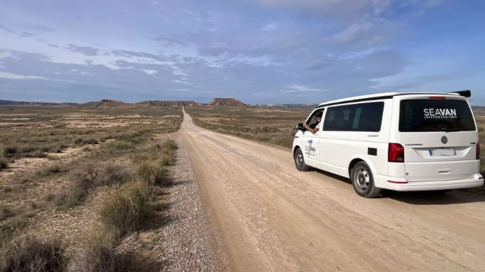
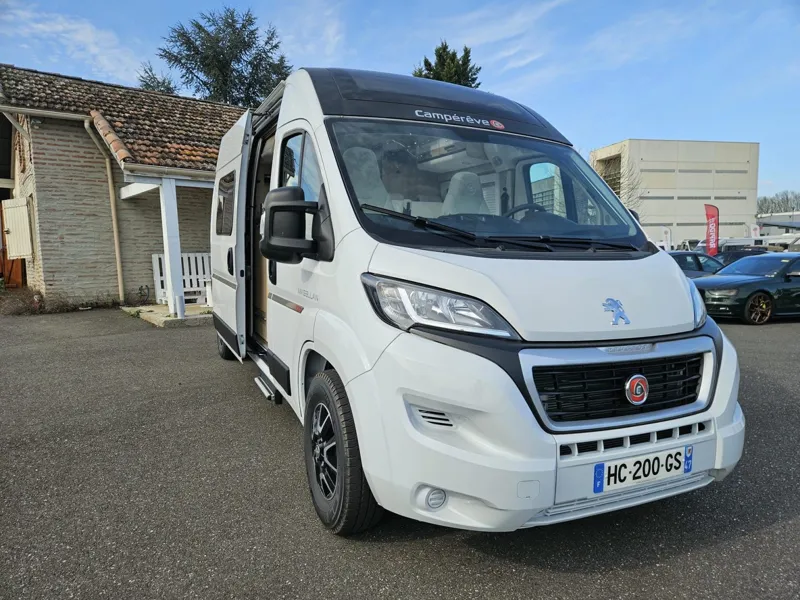
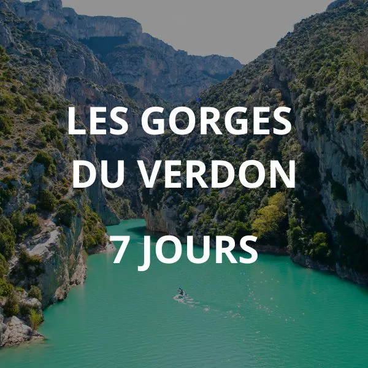
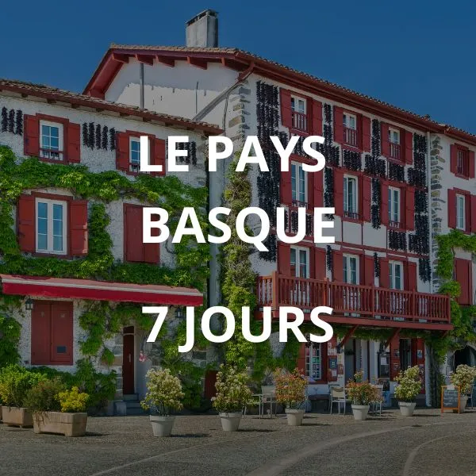

LE VAN · 4 PLACES / 4 COUCHAGES
Volkswagen California T7
Compact pour explorer. Bien équipé pour s’arrêter où l’aventure vous mène.
- Toit relevable électrique
- Boîte automatique
- Cuisine intégrée

LOCATION DE VANS & FOURGONS AMÉNAGÉS
Le grand air, une route à explorer, votre maison à bord.
Partez en road trip avec Seavan, on vous accompagne.
VOTRE MAISON, PARTOUT
À deux, entre amis ou en famille :
choisissez le compagnon de votre prochaine escapade.
LE VAN · 4 PLACES / 4 COUCHAGES
Compact pour explorer. Bien équipé pour s’arrêter où l’aventure vous mène.

LE FOURGON · 4 PLACES / 3 COUCHAGES
Un espace de vie généreux, une douche et des WC à bord. Disponible au départ d’Agen.
L’ESPRIT SEAVAN
Des passionnés de road trip, à votre écoute pour vous aider à préparer votre séjour.
Cuisine, couchages, rangements : découvrez les équipements du véhicule qui vous correspond.
Une démonstration du véhicule et un état des lieux avant de prendre la route.
LE DÉPART, C’EST PAR ICI
Votre point de départ pour le Sud-Ouest. Vans et fourgons aménagés.
Découvrir l’agence ↗Cap sur la Provence, la Camargue et les routes du soleil.
Découvrir l’agence ↗Des ruelles de la ville rose aux grands espaces des Pyrénées.
Découvrir l’agence ↗ENVIE D’ÉVASION ?


Des itinéraires jour par jour, des adresses coup de cœur et des idées de spots pour la nuit.
AVANT DE PRENDRE LA ROUTE
On est là pour répondre à vos questions.
Parlons de votre projet : 05 53 68 44 41 ↗Demandez un devis, puis confirmez votre réservation avec un acompte de 30 %. Le solde et la caution sont à préparer avant votre départ.
Les pages véhicules indiquent un âge minimum de 23 ans et deux ans de permis. Une caution par empreinte bancaire est demandée. Consultez les conditions de location pour les détails.
Le California T7 propose quatre couchages et un toit relevable. Le fourgon propose trois couchages, une douche chauffée et des WC, au départ d’Agen.
Oui ! Découvrez les carnets de voyage Seavan et leurs itinéraires, disponibles en PDF et sur l’application.
LA ROUTE N’ATTEND QUE VOUS